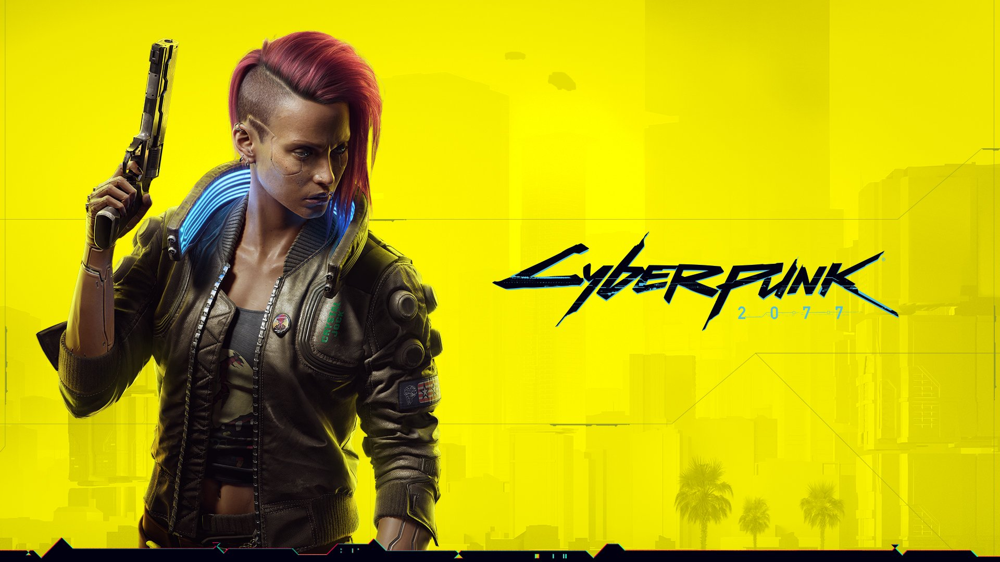
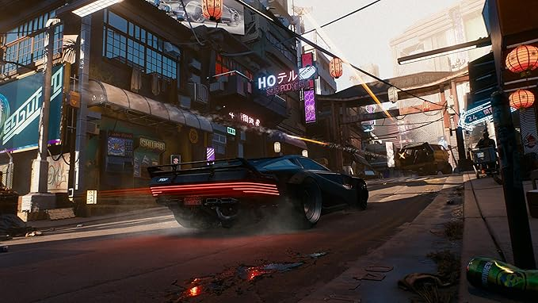
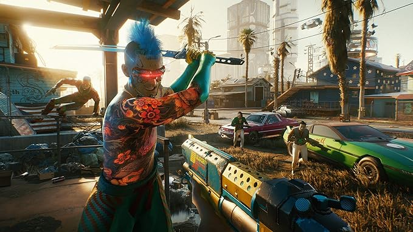
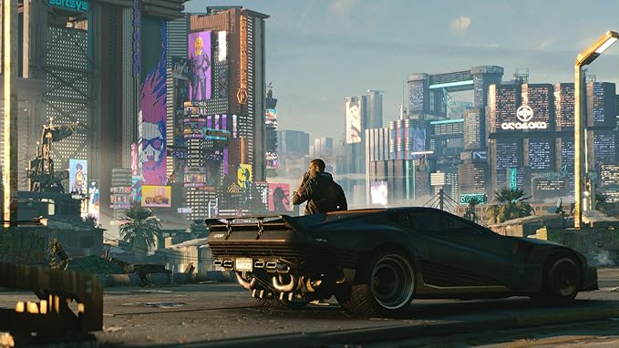
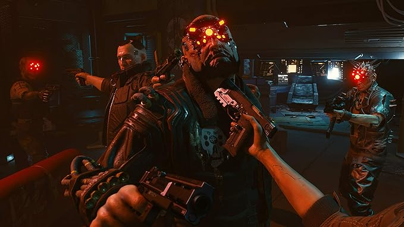

Cyberpunk 2077

Información General
Cyberpunk 2077 es un juego de rol de acción desarrollado por CD Projekt Red, basado en el juego de mesa Cyberpunk 2020. Fue lanzado en diciembre de 2020 y está ambientado en Night City, una metrópolis futurista llena de peligros y oportunidades.
- Género: Rol de acción, mundo abierto
- Plataformas: PlayStation 4, PlayStation 5, Xbox One, Xbox Series X/S, PC, Google Stadia
- Modos: Un jugador
- Desarrollador: CD Projekt Red
- Editor: CD Projekt
Características Principales
Cyberpunk 2077 ofrece un mundo abierto lleno de posibilidades, con una narrativa profunda y un sistema de personalización avanzado. Aquí algunas de sus características más destacadas:
-
Mundo abierto inmersivo - Explora Night City, una ciudad futurista llena de distritos únicos, misiones y secretos.

-
Personalización avanzada - Crea a tu personaje, V, con una amplia variedad de opciones de apariencia, habilidades y estilos de juego.

-
Narrativa profunda - Una historia emocionante con múltiples finales y decisiones que afectan el desarrollo de la trama.

-
Combate y tecnología - Utiliza armas, ciberware y habilidades especiales para enfrentarte a tus enemigos.

Recepción y Actualizaciones
A pesar de un lanzamiento polémico, Cyberpunk 2077 ha recibido numerosas actualizaciones que han mejorado significativamente la experiencia de juego. Algunos aspectos destacados incluyen:
- Actualización 1.5 - Mejoras masivas en rendimiento, corrección de errores y nuevas funciones.
- Edición Next-Gen - Optimización para PlayStation 5 y Xbox Series X/S.
- Modo foto - Captura momentos únicos en Night City con herramientas avanzadas.